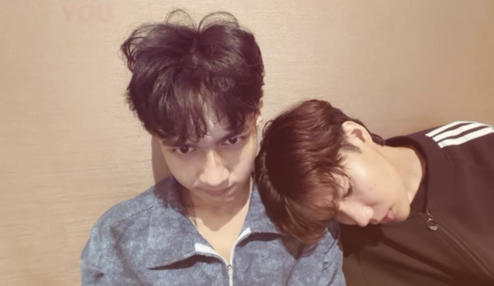
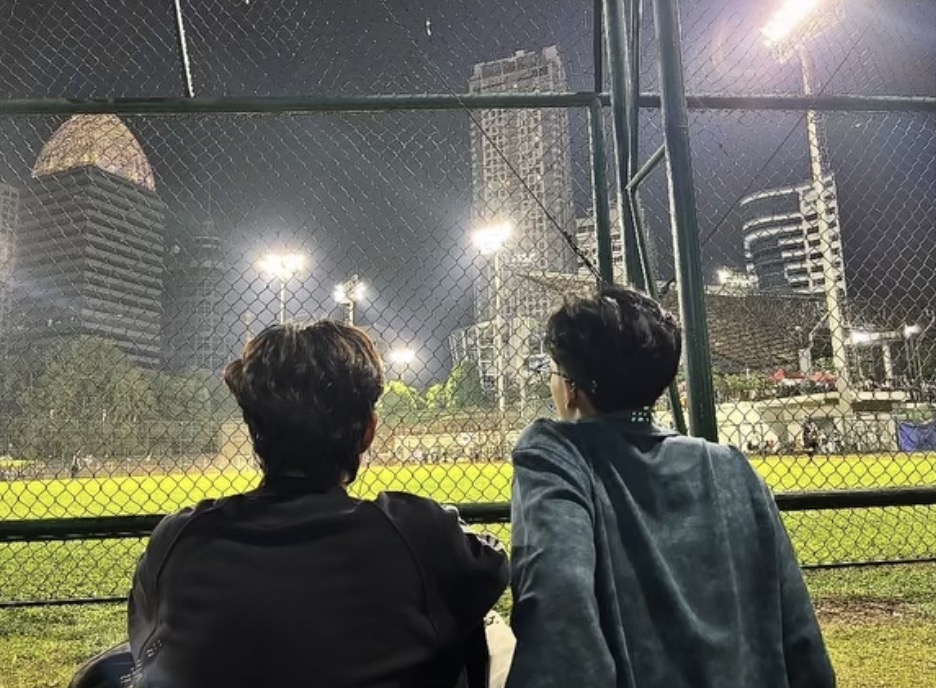
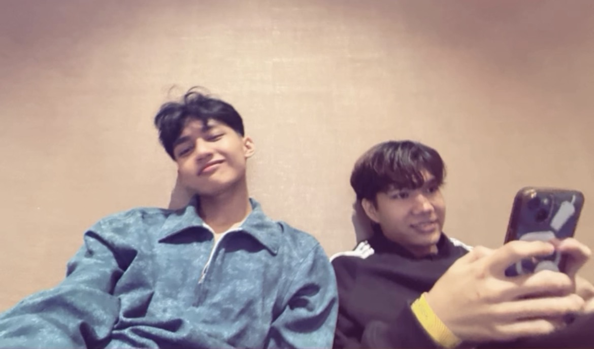

Finally, in the same place.
Our first time meeting in person.
My birthday became even more special that year. I travelled to Tangerang Selatan, and you came to pick me up at Pasar Senen station.
After all those conversations and video calls, I finally got to see you in front of me. No screen between us. No distance to think about. Just you and me.

We spent three days and two nights together. On the first night, we ate nasi goreng, fed each other, and you gave me a Blokees Mr. Tombstone action figure.
The next day, we went to BXSea and BXChange. We walked around, enjoyed our time together, and later had bakso at GBK.
Nothing extraordinary had to happen. Being able to do simple things with you was already more than enough.




When it was time to go home, you took me to Tanah Abang station. Saying goodbye was difficult, but I went home carrying memories I would never want to forget.
After that trip, I realized that seeing you in person only made me fall for you even more.